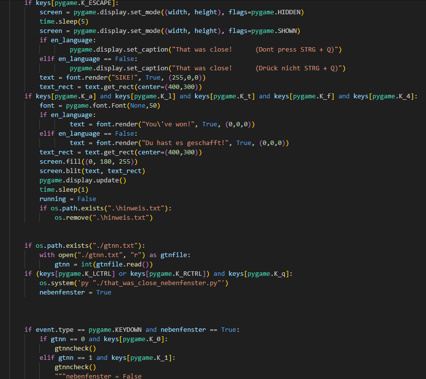

That Was Close!
Ein Spiel, was du schließen musst, um zu gewinnen.

That was close - ein Spiel, was du schließen musst
Dieses Game ist nicht gerade einfach zu schließen.
Aber genau das musst du machen!
Versuche, das Fenster zu beenden,indem du kleine Puzzle und Rätsel löst.
Das Gameplay dauert ungefähr 5 Minuten und das Spiel wurde mithilfe Pygame programmiert.
Viel Spaß beim Rätseln!
Dieses Game ist nicht gerade einfach zu schließen.
Aber genau das musst du machen!
Versuche, das Fenster zu beenden,indem du kleine Puzzle und Rätsel löst.
Das Gameplay dauert ungefähr 5 Minuten und das Spiel wurde mithilfe Pygame programmiert.
Viel Spaß beim Rätseln!